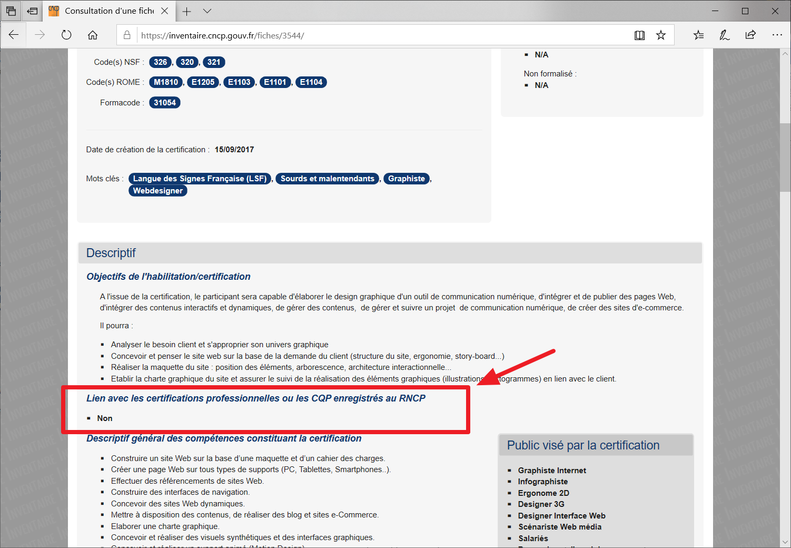

Mon expérience du formation du WebDesigner avec l'accessibilité de la langue de signes direct
Dans l’article de ce jour, j’ai envie de vous faire part de mon expérience de formation en tant que WebDesigner et ce que j’en pense. En Suisse, on m’a proposé une formation de WebDesigner mais je n’ai pas pu répondre positivement à cette possibilité, cela pour deux raisons principales :
- Je n’ai pas de diplôme de graphiste ; en conséquence, j’ai des notions vraiment très basique en graphisme.
- Je n’ai pas obtenu le droit de recourir à un interprète en langue de signes. Sans cela, je ne peux pas étudier dans des conditions correctes.
Ce métier de WebDesigner est à la fois positif et négatif du point de vue des sourds et les malentendants. Je commence par un point positif :
C’est un métier qui offre un travail très visuel qui ne peut que plaire aux sourds qui seront toujours naturellement attirés par ce type de métier. En comparaison, les métiers basés sur la lecture / écriture seront beaucoup moins attirants pour les sourds qui ont un niveau de français variable et clairement différent par rapport au niveau détenu par les entendants. Bien entendu, je sais qu’il y a plusieurs sourds qui savent bien lire et écrire mais la majorité ne sait pas écrire ou du moins sans difficulté. En ce qui me concerne, tous les textes que je publie sur LinkedIn (et mon ancien blog N23) sont ainsi toujours relus et corrigés par un écrivain public en Suisse. Et parfois, j'ajoute/modifie quelques textes après le correction.
Pour moi, une situation d’apprentissage correcte est donc celle où je peux suivre l’intégralité des cours avec l’aide de la langue des signes. Alors il est donc évident que j’aime travailler avec des éléments visuels. Les sourds qui sont à l’aise dans le numérique peuvent commencer par une formation de de graphiste qui dure entre 2 et 3 ans d’apprentissage (cela dépend du cursus proposé dans l’école) qui débouche sur un diplôme. A cela, il faut ajouter 6 mois d’apprentissage de WebDesigner proprement dit afin de d’obtenir un diplôme correspondant. C’est un parcours intéressant dans la perspective de l’obtention d’une place de travail.
Et maintenant, je vous livre un point négatif sur ce métier :
Cela concerne la communication. Certes, les personnes sourdes ont le droit de réserver un interprète pour des situations telles que conférence professionnelle, séances de travail et de bilan, entretiens avec la clientèle, etc. Mais il y a des limites qui sont posées : ainsi, en France, on a droit à 40 heures d’interprétariat par année, ce qui est clairement insuffisant. Dans ces conditions, si on vit des situations difficiles de communication défaillante sans interprète, il est bien difficile de garder une motivation intacte. C’est ce qui m’est arrivé, entre autres.
Ma recommandation :
Il faut bien réfléchir avant d’entamer de telles études ; renseignez-vous en particulier sur les droits et la reconnaissance que vous aurez lorsque vous serez professionnel dans un domaine de métier (financement des frais d’interprétariat et nombre d’heures pris en charge), et veillez à avoir des sources d’information fiables concernant votre formation.
Pour la suite de cet article, je vais parler spécifiquement de ma propre situation :
Pourquoi ai-je malgré tout poursuivi la formation de WebDesginer en France chez Signes et Formations ?
L’année passée, j’ai d’abord appris oralement, via Skype, que le certificat qui serait obtenu à la fin de la formation serait reconnu et que j’aurais la possibilité de trouver une place de travail une fois la formation achevée. En outre, le formateur et quelques intervenants sont sourds et donnent eux-mêmes des cours en langue des signes.
Cette expérience de travail ne m’a pas fait peur, et j’ai donc déposé ma candidature pour cette formation, candidature qui a été acceptée. Initialement, je n’avais pas compris exactement en quoi consistait le travail d’un WebDesigner, mais je savais qu’il avait des liens avec le métier de graphiste. Malgré cela, j’étais très motivé à devenir un WebDesigner.
Qu’ai-je appris durant la formation ?
Tout d’abord, j’ai découvert le monde du design ainsi que UI/UX et puis les logiciels de la suite Adobe. J’y avait déjà été sensibilisé par le passé mais je n’étais pas à jour dans mes connaissances, et les cours de Photoshop, Illustrator, et Adobe Premiere m’ont tous bien aidé. C’était un rafraîchissement de mémoire important et j’ai pu également assimiler deux logiciels que je ne connaissais pas auparavant : Adobe After Effects et Adobe XD. J’ai notamment réalisé un dossier de présentation sur un projet de site destiné à être évalué.
Après avoir achevé la formation et réussi mes examens, ai-je des regrets ?
Oui, certainement, mais sans aller dans le détail et sans vouloir attaquer personnellement quiconque, tout ce que je peux dire consiste en ces 3 points :
- La pédagogie et l'organisation de cette formation étaient beaucoup moins professionnelles par rapport à mes formations précédentes… Et je n’ai pas appris tous les outils nécessaires pour un véritable métier comme c’est le cas chez les entendants. Un bon exemple est le lien suivant qui expose clairement le programme d’un WebDesigner : https://www.mydigitalschool.com/bachelor-webdesign?o=programme. En comparaison, je n’ai appris que des éléments basiques parce que le formateur n’a pas un diplôme nécessaire du métier et in pour le diplôme/certificat (avec RNCP) du formateur et les intervenus n’apportent pas tous les notions nécessaires en adapté le métier car j’avais eu plus de 5 semaines du cours vides...
- Après l’obtention du certificat, j’ai découvert que celui-ci n’est pas reconnu par l’État français. Le certificat par l’entreprise Signes et Formations n’est pas un certificat de qualification professionnelle (CQP) qui n’est pas enregistré au Répertoire national des certifications professionnelles*. Cela explique pourquoi je n’arrive pas à retrouver un travail en France. J’aurais dû écouter un de mes amis suisses qui m’avait conseillé de bien me renseigner avant de m’inscrire, mais je n’avais pas suivi son conseil. En effet, je me suis seulement basé sur les affirmations que j’avais reçues sur Skpye et j’ai pris des risques car les informations étaient déjà floues. Il faut bien dire que j’étais dans une période difficile et d’ennui sévère, après 2 ans de chômage ininterrompu. Mon tort a été de faire aveuglément confiance à l’équipe de cette formation car j'étais trop heureux à la perspective de débuter cette formation accessible en langue des signes. Mais c’est mon erreur et je l’assume comme telle.
- Je ne peux pas continuer à m'entraîner dans la perspective d’un métier de Webdesigner car je n’ai pas les moyens pour financer l’abonnement à une suite Adobe et mon ordinateur n’est pas assez performant pour gérer les programmes volumineux d’Adobe.
*Le site web est très clair et précis :

Avant mon départ en France, je ne connaissais pas la système des diplômes en France. Pendant étant résidant en France, j'ai appris beaucoup les choses. Voici l’adresse du site officiel : https://inventaire.cncp.gouv.fr/fiches/3544/.
Après avoir achevé cette formation et après avoir réussi mes examens, puis-je en retirer quelque chose de positif ?
Oui, j’ai quand même bénéficié d’éléments positifs :
- J’ai pu écouter les cours sans efforts particulier directement en langue des signes et cela m’a fait très plaisir.
- J’ai bénéficié de l’aide d’un ami qui est hyper motivé et j’écoute son opinion très pertinente concernant le monde du travail et d’autres éléments. Nous avons pu, durant la formation, échanger énormément d’informations et avons étudié ensemble durant 9 mois, ce d’autant plus que nous avons suivi le même stage dans la même entreprise. C’est grâce à cet ami que j’ai appris autant de choses et que j’ai finalement réussi mes examens. Nous continuons à garder contact à l’heure actuelle.
- J’ai aussi découvert comment fonctionne le monde du travail en France, qui est vraiment très différent par rapport à ce que nous vivons en Suisse, ce qui m’a fait beaucoup réfléchir durant cette année où j’ai habité en France. Ma vision professionnelle a beaucoup changé depuis que j’ai quitté la Suisse, ainsi que ma perception de la vie sociale en France.
- Les notions de WebDesginer que j’ai acquises m’ont fourni de nouvelles pistes concernant mes méthodes de travail professionnelles, cela grâce aux cours de Design.
Pourquoi n’ai-je pas continué la formation de développeur web qui est également proposé dans la même école ?
J’ai déposé une candidature pour cette seconde formation avant la fin de ma formation de WebDesigner. Pendant l’été, après avoir achevé ma première formation, j’ai beaucoup réfléchi et finalement j’ai changé d’avis et j’ai donc retiré mon dossier de candidature. J’ai dû tenir compte du fait que je ne détiens pas le baccalauréat et cet élément manquant rend très difficile de trouver une place de travail. En outre, étant résident étranger en France, j’ai beaucoup de difficultés à obtenir des allocations sociales, ce qui m’a incité à revenir en Suisse. Je dois à présent réfléchir afin de choisir un projet de vie qui soit viable.
Une piste possible pourrait être celle-ci : le WebDesigner peut également devenir un Intégrateur Web . C’est-à-dire que, dans le processus de création d’un site web, je serais chargé de construire le site sur la base d’une maquette web déjà réalisée. Ce serait un rôle intéressant, car dans cette configuration, je n’aurai pas besoin d’être en contact permanent avec la clientèle. J’ai déjà débuté des démarches afin de pouvoir réintégrer une entreprise active dans ce domaine.
Après cette expérience, ce que je vais faire ?
Mon premier objectif est mon retour de Suisse et le seconde objectif est retrouver un place de travail.
Et si je ne trouverai pas le travail en tant qu’intégrateur web dans les mois à venir et je quitterai définitivement le domaine d’informatique pour toujours... C'est vraiment dommage car c'était mon rêvé de travailler dans cette domaine. Je suis actuellement en train de chercher les autres domaines pour que je puisse travailler nécessaire dans un but à reconstruire correctement une parcours professionnelle qui donne une vie normale comme tout le monde.
Vous l'avez peut-être compris dans mon article mais je vous dis franchement après mon expérience : Je vous déconseille poursuivre le métier WebDesigner.
Merci pour votre attention et pour la lecture de ce billet.